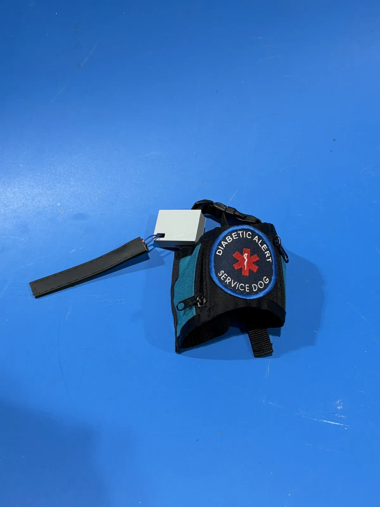
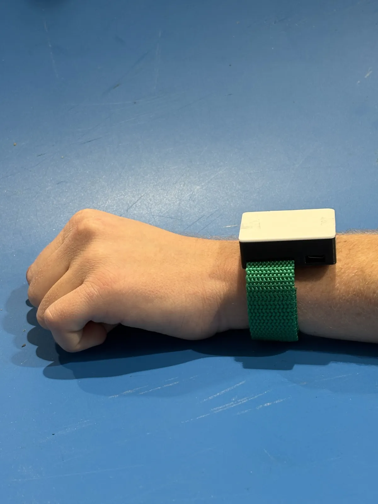
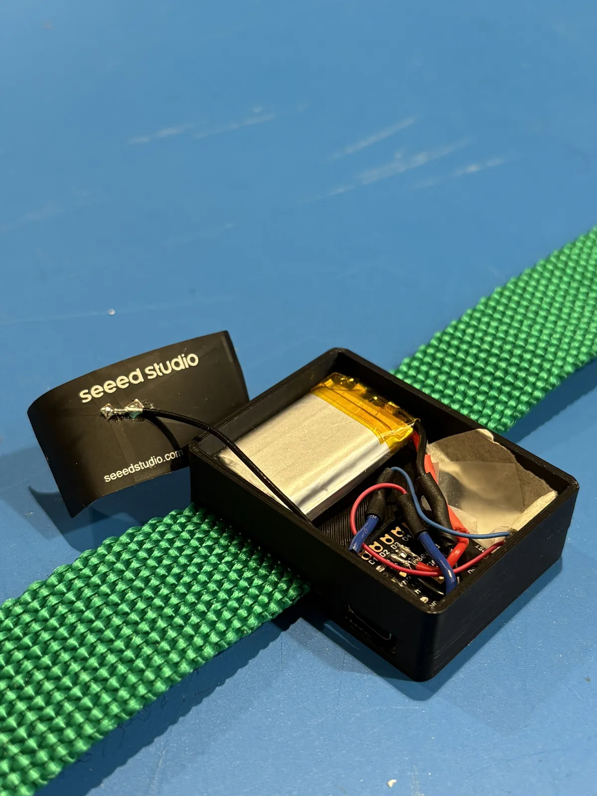
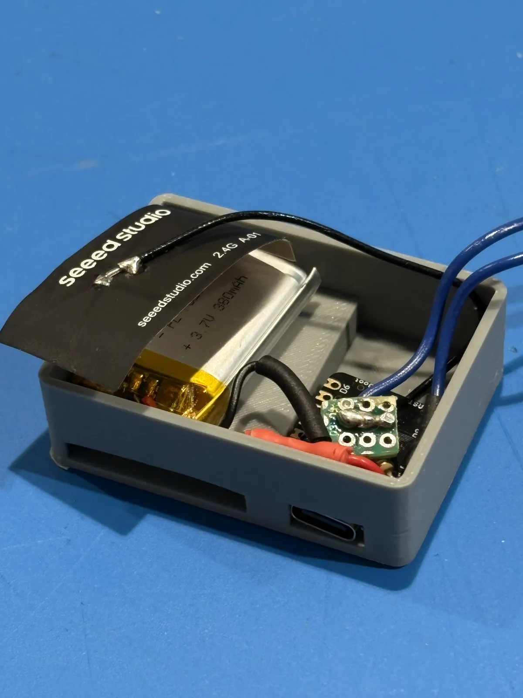
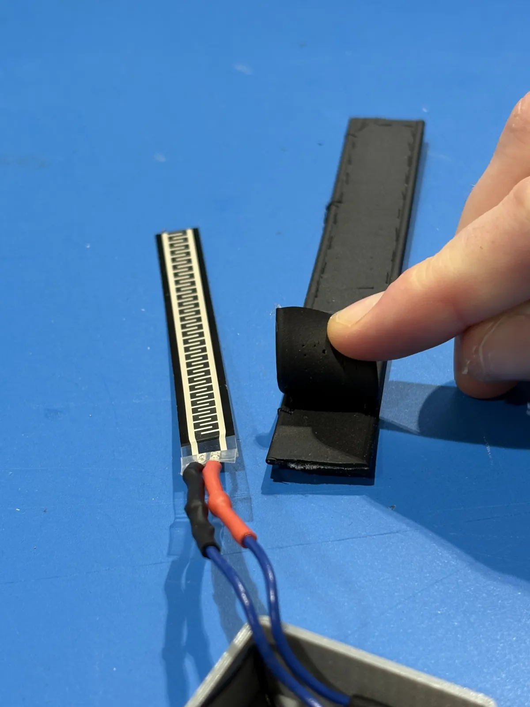

Bark-itects
Wireless Alert System for a Diabetic Alert Dog — Duke University



4-person team. Did all CAD for the project and led assembly and iteration of the sensor/bringsel subsystem.
Bark-itects is a wireless alert system for a diabetic alert service dog. The dog bites down on an augmented bringsel — a pressure sensor sewn into a biothane exterior (the client's idea; I specified and integrated the material). The handler wears a bracelet that vibrates through a motor mounted in the enclosure wall. I CAD'd and 3D printed both enclosures.
Comms run over ESP-NOW between two Seeed XIAO ESP32C3 boards — no phone, no Wi-Fi. Both sides run on a 3.7V 380mAh battery (electrical's subsystem, not mine).
4 design revisions to get the actuation threshold right. First the sensor wouldn't trigger on a real bite. Fixed that, and it started triggering on ordinary dog movement. Fixed that too.
Results vs. Requirements
- Weight: 41g vs. <317g target — pass
- Transmission reliability: 91.67% over 100 trials
- Battery life: 6.33 hr vs. 9 hr target — did not meet
- Water resistance (IPX5-6): untested
- Bite resistance: ~1 year, estimated from client experience
Awards
- Innovation in Design Award — Duke University


